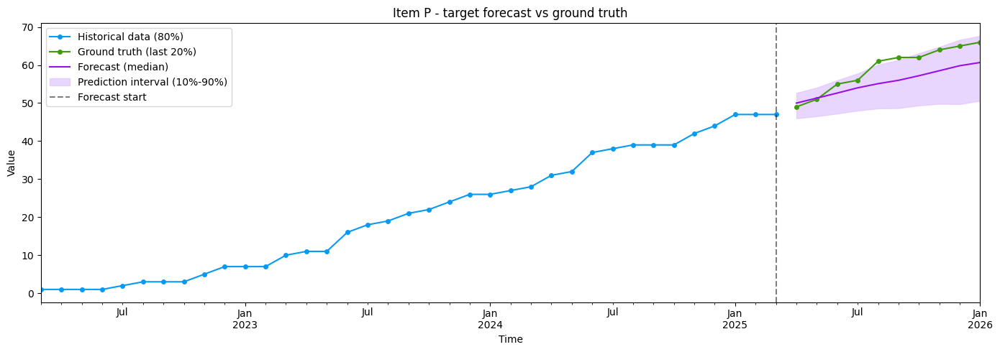
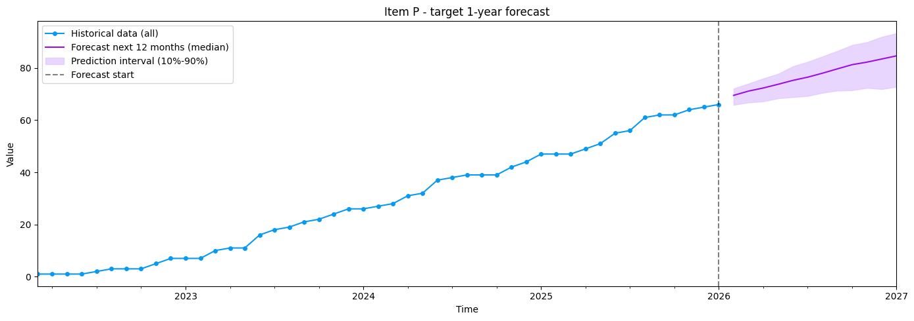

项目数预测示例
import os
os.environ["CUDA_VISIBLE_DEVICES"] = "0"
import pandas as pd
import numpy as np
import matplotlib.pyplot as plt
from chronos import BaseChronosPipeline, Chronos2Pipeline
pipeline: Chronos2Pipeline = BaseChronosPipeline.from_pretrained("amazon/chronos-2", device_map="cpu")
all_df = pd.read_csv("data/project.csv")
print("数据维度:", all_df.shape)
display(all_df.head())
split_idx = int(len(all_df) * 0.8)
context_df = all_df.iloc[:split_idx].copy()
test_df = all_df.iloc[split_idx:].copy()
print(f"\n上下文（前 80%）：{len(context_df)} 行，测试集（后 20%）：{len(test_df)} 行")
数据维度: (47, 3)
|
item_id |
timestamp |
target |
| 0 |
P |
2022-03-01 00:00:00 |
1 |
| 1 |
P |
2022-04-01 00:00:00 |
1 |
| 2 |
P |
2022-05-01 00:00:00 |
1 |
| 3 |
P |
2022-06-01 00:00:00 |
1 |
| 4 |
P |
2022-07-01 00:00:00 |
2 |
上下文（前 80%）：37 行，测试集（后 20%）：10 行
pred_df = pipeline.predict_df(context_df, prediction_length=len(test_df), quantile_levels=[0.1, 0.5, 0.9])
print("数据维度:", pred_df.shape)
display(pred_df.head())
数据维度: (10, 7)
|
item_id |
timestamp |
target_name |
predictions |
0.1 |
0.5 |
0.9 |
| 0 |
P |
2025-04-01 |
target |
50.001190 |
45.999714 |
50.001190 |
52.663597 |
| 1 |
P |
2025-05-01 |
target |
51.310844 |
46.534058 |
51.310844 |
54.074158 |
| 2 |
P |
2025-06-01 |
target |
52.637196 |
47.250412 |
52.637196 |
55.997334 |
| 3 |
P |
2025-07-01 |
target |
54.012184 |
48.027237 |
54.012184 |
57.787060 |
| 4 |
P |
2025-08-01 |
target |
55.104786 |
48.588493 |
55.104786 |
60.085312 |
item_id = "P"
target_column = "target"
ts_context = context_df.query("item_id == @item_id").set_index("timestamp")[target_column]
ts_test = test_df.query("item_id == @item_id").set_index("timestamp")[target_column]
ts_pred = pred_df.query("item_id == @item_id and target_name == @target_column").set_index("timestamp")[["0.1", "predictions", "0.9"]]
ts_context.index = pd.to_datetime(ts_context.index)
ts_test.index = pd.to_datetime(ts_test.index)
ts_pred.index = pd.to_datetime(ts_pred.index)
last_date = ts_context.index.max()
fig = plt.figure(figsize=(14, 5))
ax = fig.gca()
ts_context.plot(ax=ax, label=f"Historical data (80%)", color="xkcd:azure", marker="o", markersize=4)
ts_test.plot(ax=ax, label=f"Ground truth (last 20%)", color="xkcd:grass green", marker="o", markersize=4)
ts_pred["predictions"].plot(ax=ax, label="Forecast (median)", color="xkcd:violet")
ax.fill_between(
ts_pred.index,
ts_pred["0.1"],
ts_pred["0.9"],
alpha=0.7,
label="Prediction interval (10%-90%)",
color="xkcd:light lavender",
)
ax.axvline(x=last_date, color="black", linestyle="--", alpha=0.5, label="Forecast start")
ax.legend(loc="upper left")
ax.set_title(f"Item {item_id} - {target_column} forecast vs ground truth")
ax.set_xlabel("Time")
ax.set_ylabel("Value")
plt.tight_layout()
plt.show()

future_pred_df = pipeline.predict_df(all_df, prediction_length=12, quantile_levels=[0.1, 0.5, 0.9])
item_id = "P"
target_column = "target"
ts_all = all_df.query("item_id == @item_id").set_index("timestamp")[target_column]
ts_future = future_pred_df.query("item_id == @item_id and target_name == @target_column").set_index("timestamp")[["0.1", "predictions", "0.9"]]
ts_all.index = pd.to_datetime(ts_all.index)
ts_future.index = pd.to_datetime(ts_future.index)
last_date = ts_all.index.max()
fig = plt.figure(figsize=(14, 5))
ax = fig.gca()
ts_all.plot(ax=ax, label="Historical data (all)", color="xkcd:azure", marker="o", markersize=4)
ts_future["predictions"].plot(ax=ax, label="Forecast next 12 months (median)", color="xkcd:violet")
ax.fill_between(
ts_future.index,
ts_future["0.1"],
ts_future["0.9"],
alpha=0.7,
label="Prediction interval (10%-90%)",
color="xkcd:light lavender",
)
ax.axvline(x=last_date, color="black", linestyle="--", alpha=0.5, label="Forecast start")
ax.legend(loc="upper left")
ax.set_title(f"Item {item_id} - {target_column} 1-year forecast")
ax.set_xlabel("Time")
ax.set_ylabel("Value")
plt.tight_layout()
plt.show()
print("\nForecast values:")
display(future_pred_df[["timestamp", "predictions", "0.1", "0.9"]])

Forecast values:
|
timestamp |
predictions |
0.1 |
0.9 |
| 0 |
2026-02-01 |
69.505455 |
65.858917 |
72.079399 |
| 1 |
2026-03-01 |
71.134468 |
66.780243 |
73.995094 |
| 2 |
2026-04-01 |
72.328255 |
67.193024 |
75.988914 |
| 3 |
2026-05-01 |
73.741791 |
68.362160 |
77.742867 |
| 4 |
2026-06-01 |
75.245270 |
68.847298 |
80.623474 |
| 5 |
2026-07-01 |
76.476807 |
69.258049 |
82.347092 |
| 6 |
2026-08-01 |
77.998215 |
70.490013 |
84.403442 |
| 7 |
2026-09-01 |
79.656471 |
71.325272 |
86.516655 |
| 8 |
2026-10-01 |
81.264915 |
71.482956 |
88.808182 |
| 9 |
2026-11-01 |
82.242973 |
72.351349 |
89.887680 |
| 10 |
2026-12-01 |
83.443535 |
71.914581 |
91.916031 |
| 11 |
2027-01-01 |
84.660263 |
72.770012 |
93.323433 |